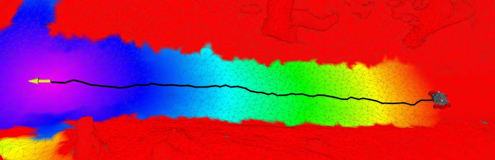
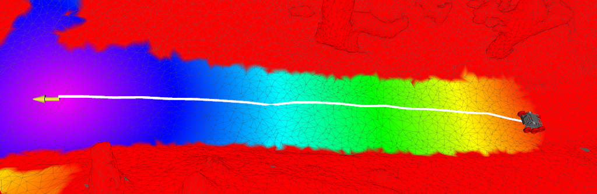

Path Planning
In classic mobile robot navigation, we like to distinguish between global path planning and local motion planning to balance long-term goals with real-time feasibility. The global planner provides a high-level route through the environment, ensuring the robot moves efficiently toward its destination. Mesh navigation provides several global planners designed to compute feasible paths across 3D surfaces. All implemented planners share the core principle of computing shortest paths on a triangular mesh. Depending on configuration, they can also take into account obstacle avoidance.
Dijkstra Planner
The Dijkstra Planner implements the classic Dijkstra's algorithm. It operates on the graph representation of the triangle mesh, where mesh vertices represent graph nodes and mesh edges represent graph edges.

This planner is well-suited for applications where simplicity, robustness, and deterministic behavior are desired, but it is limited to edge-based paths rather than continuous trajectories over the surface.
Continuous Vector Field Planner
The Continuous Vector Field Planner (CVP) extends beyond edge-based search by planning directly over the surface of the mesh instead of its connectivity graph. CVP uses a wavefront propagation technique to generate a globally consistent vector field that encodes the continuous shortest path direction from any point on the mesh to the goal. Therefore, can flow smoothly across triangle faces, producing shorter and more natural trajectories than the ones found by the Dijkstra planner. Similar to Dijkstra, CVP can integrate surface costs, allowing navigation that avoids obstacles or prefers favorable terrain. This makes CVP particularly useful for mobile robots operating on uneven or natural terrain, where edge-restricted paths would otherwise be suboptimal or unnatural. Furthermore, CVP is less sensitive to the density of the triangles in the mesh.

Note
For the theoretical background and implementation details, see:
@inproceedings{puetz21cvp,
author = {Pütz, Sebastian and Wiemann, Thomas and Kleine Piening, Malte and Hertzberg, Joachim},
title = {Continuous Shortest Path Vector Field Navigation on 3D Triangular Meshes for Mobile Robots},
booktitle = {2021 IEEE International Conference on Robotics and Automation (ICRA)},
year = 2021,
url = {https://github.com/uos/mesh_navigation},
note = {Software available at \url{https://github.com/uos/mesh_navigation}}
}
It is available on IEEE Xplore.
Config:
mesh_planner:
type: 'cvp_mesh_planner/CVPMeshPlanner'
cost_limit: 0.99 # Vertices with costs higher than this value will be avoided. Has to be set *below* the inflation layer inscribed value to avoid obstacles in planning
publish_vector_field: true
Obstacle-aware planning
After the cost layers have been computed, the resulting vertex costs are transformed into edge costs inside the mesh map. In this step, the parameter of the mesh map edge_cost_factor determines how much the vertex costs are added (!) to the edge distance. We add the costs to the edge distances to preserve the admissible property of future heuristic search implementations: When using pre-computed distances or the air-line to the target as heuristics, the actual costs collected along the way will be always at least higher.
Setting the edge_cost_factor parameter to zero will let the planners ignore all static obstacles. An example configuration that takes (static) obstacles into account while planning could be:
mesh_map:
# An edge cost equals the total costs that are collected along a
# triangle's edge by linearly interpolating the combined vertex costs
# This factor defines the factor that is used for the final edge weight
# -> edge_weight = edge_length + edge_cost_factor * edge_cost
# This edge_weight is then passed to the global planner to search for
# the best path
# Note: Set this to 0.0 if you need the shortest path
edge_cost_factor: 5.0
# [...] Other parameters of mesh_map
Comparison
| Vector Field Planner | Dijkstra Mesh Planner | ROS Global Planner on 2.5D DEM |
|---|---|---|
 |